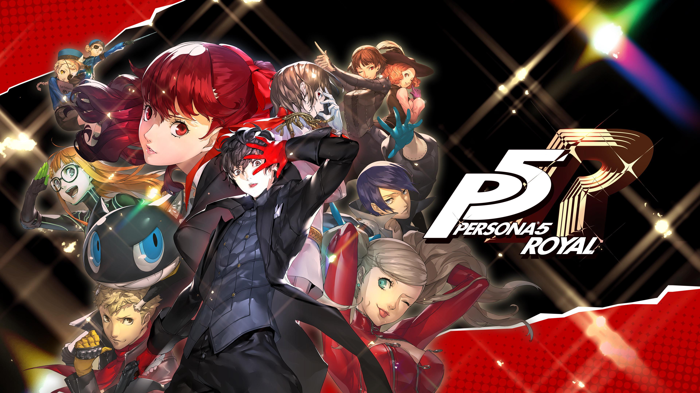

Persona 5 Royal

Introducción
Persona es una saga de videojuegos de género JRPG (RPG Japonés), la cual su desarrolladora es Atlus, donde el primer juego fue el 20 de septiembre de 1996. Sus dos primeras entregas no generaron un gran impacto sino hasta la tercera donde orientaron su premisa hacia el lado de la muerte y cuestiones filosóficas; la cuarta generando una gran base de fanáticos por el desarrollo de la amistad de su elenco y donde verdaderamente explotó el éxito comercial fue con el juego reseñado hoy… Persona 5: Royal.
Trasfondo
Para poner en contexto, Persona es una entrega que mezcla gestión de rutina diaria, relaciones con tus vínculos a los cuales se los llamarán Confidentes y peleas por turno... si, combinación bastante peculiar pero que a la vez funciona y mucho. Las peleas se desarrollan utilizando justamente Personas, los cuales son seres encarnados de la determinación y poder del usuario, manifestándose en el mundo cognitivo como entidades con poderes mágicos. Depende la entrega determinará qué condiciones necesitan los usuarios para liberarlos.
Historia
Lo primero y lo más sincero... no es un juego para cualquiera, tiene la influencia japonesa y de animé a flor de piel todo el tiempo, si no sos de esa “onda” puede que te cueste engancharte al principio. La remisa se basa en que nos encontraremos individuos que han sido corrompidos por sus deseos y malas intenciones, los cuales generarán un Palacio, que es una manifestación física y cognitiva que representa cómo el usuario se auto percibe y el daño que genera a los demás. Nuestro elenco será el encargado de entrar a los mismos, derrotar a los enemigos y vencer al Jefe del Palacio para desmontar la cognición desfigurada del villano.
Es increíble cómo ATLUS, en un juego que se extiende a más de 100 horas, logra que no puedas dejarlo y que siempre quieras avanzar más y más.
Personajes
Creo que este es uno de los mejores e intermedios puntos, ya que los personajes son increíbles, más sus historias y trasfondos no tanto. Tomamos de ejemplo Ryuji, el mejor amigo del protagonista, como personaje es excelente… es temerario, obstinado, compañero y no le tiene miedo a nada, más su trasfondo es que se lesionó la rodilla y los problemas con su club de atletismo al dejarlo… Como dije en la historia, yo porque soy un fanático acérrimo del animé y sé que así se manejan y cuentan las historias, pero capaz alguien no involucrado le pueda dar cringe.
Pero no todo está perdido... Kawakami, Chihara, Futaba, etc, y por sobre todo: Yoshizawa, Maruki y Akechi son cine puro, lo que hicieron con esos personajes es de admirar.Combate
Acá llegamos a los pesos pesados, ya que el combate es donde este juego más se luce. Sé que hay gente que puede escaparles a los combates por turno, entiendo que es un método algo obsoleto, ¡pero por favor prueben Persona 5 Royal por este apartado ya que el combate es SUBLIME! Cada minúsculo detalle de los combates está perfectamente pensado, tienes muchos recursos de los cuales podés ajustar estrategias bien pensadas para cada ronda de enemigos que te encuentres, pero por sobre todo… el Flow, el maldito Flow. Es increíble cómo, cuando te adaptaste, entrás a un trance donde ejecutas estrategias complicadas, ataques alucinantes y vistosos, bastones de Relevo, super ataques, curaciones, disparos de arma y todo sin darte cuenta.
Es todo un ecosistema que incluso se siente separado del propio juego ya que es muy satisfactorio y hasta adictivo que literalmente estás: bueno uno más, y no parás.Estética y Arte
El juego brilla, y literalmente. Desde el primer momento que lo abrí pensé lo mismo a lo largo del mismo: Este juego tiene una dirección de arte muy pero muy bien pensada, organizada y orquestada. Todo desde los colores, los ángulos de cámara, los menús tienen animaciones diferentes para cada acción que quieras realizar... literal para cada acción. Creo que es uno de los puntos que hizo al juego tan mainstream ya que es raro encontrar tanta originalidad en un juego AAA.
Música
Voy a orar a Dios Atlus ya que la música es de otro mundo, sin mentir, ya que literalmente la estoy escuchando mientras hago esta reseña. Cada pieza musical es una joya donde mezclan un Jazz Pop contemporáneo que incluso busqué referencias parecidas y podría decirse que crearon un género nuevo. Las piezas son interesantes, desbordan carisma y hablan muy bien de cada momento en que están colocadas en el juego. Last Surprise es una máster class de cómo crear una canción insignia. En los palacios se reproducen en bucle y no te cansas en ningún momento… es más, te vas a Youtube a seguir escuchándo.
Defectos
Gestión del tiempo
- O tu amiga o enemiga
- Si sos muy metódico (como yo) va a ponerte ansioso
- Día perdido, dia desaprovechado, y se siente
- Al principio agobia la cantidad de cosas para hacer
Final
- No es malo, pero si sentimientos encontrados
- Decisiones apresuradas o sentimientos algo metidos con calzador
- Todo esto final de Royal eh!
Como dev, ¿qué me llevo?
La consistencia estética es brutal. Cada pantalla, cada transición, cada sonido refuerza la misma idea. Es un recordatorio de que el game feel no es solo animación — es la suma de cada decisión visual y sonora trabajando junta. También me quedo pensando en cómo manejaron la progresión de los Confidants: es una forma elegante de darle al jugador objetivos secundarios con recompensas concretas sin romper el ritmo principal.
Conclusiones
¡Tomemos unos matesitos y digan qué les pareció el juego o qué les llama la atención!
Veredicto final
Persona 5 Royal es un juego que quería jugar hace mucho, cuando tuve la oportunidad lo probé con dudas de su gran popularidad y la verdad me hizo amar aún más los videojuegos y desde muchísimos apartados distintos.